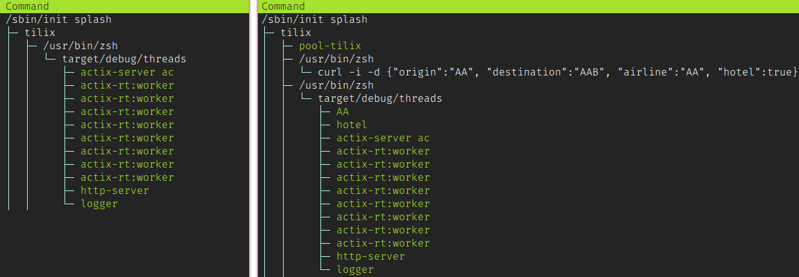
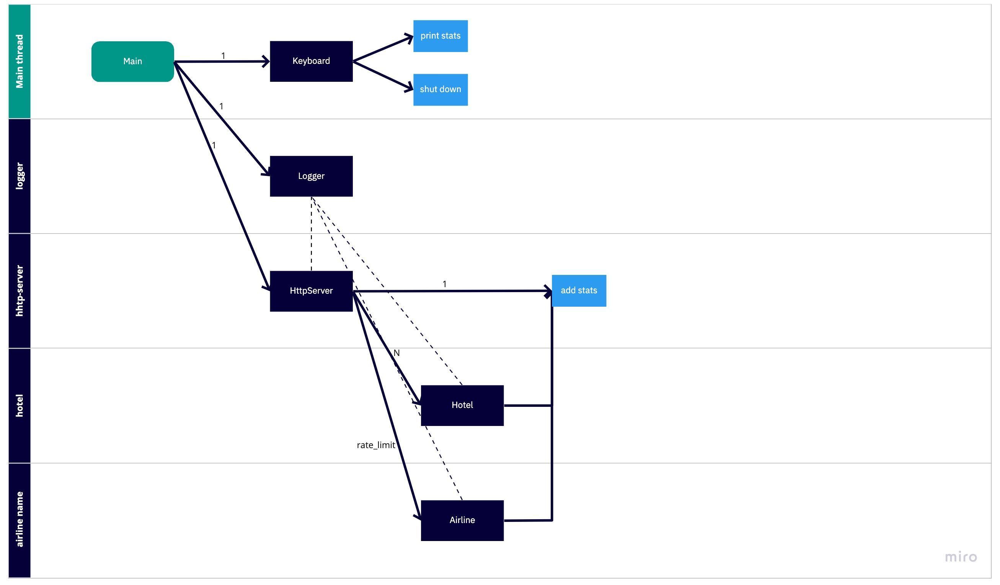
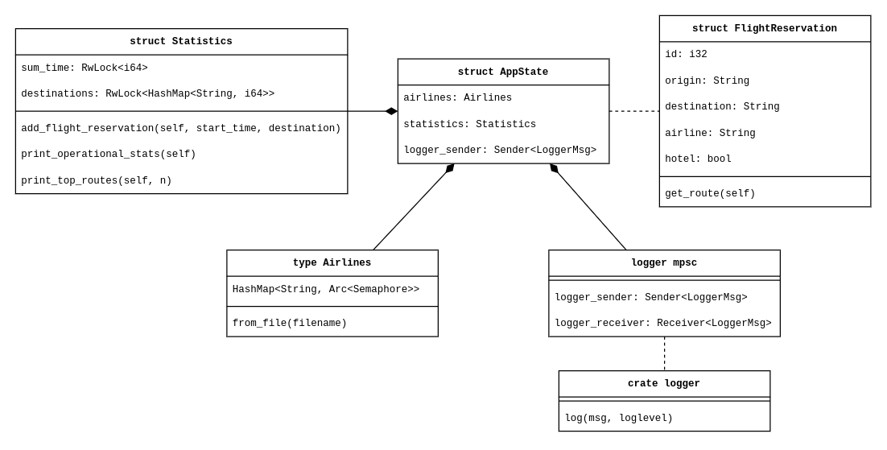
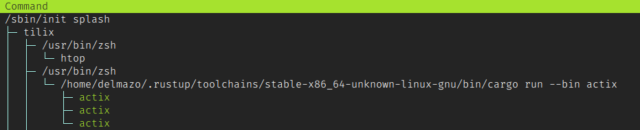

Crate informe[−][src]
Expand description
Informe
Este informe puede ser leido tanto en PDF (gracias a pandoc) como en HTML (gracias a rustdoc)
Para documentación especifica del código fuente que excede a este informe se puede consultar la documentación de la aplicación (en inglés).
Trabajo Práctico
Este trabajo práctico se forma por dos distintas implementaciones de un sistema de reservas de vuelos a procesar de manera concurrente:
-
La primera parte consiste de un servidor HTTP que responde reservas de vuelos, y para cada una levanta distintos hilos.
- El motor del servidor es actix-web
- Su código fuente se puede encontrar en src/threads
- El servidor se puede levantar con
cargo run --bin threadsy un ejemplo de un pedido de reserva escurl -i -d '{"origin":"EZE", "destination":"JFK", "airline":"AA", "hotel":true}' -H "Content-Type: application/json" -X POST http://localhost:8080/ - Esta implementación tiene pruebas que pueden ser ejecutadas con
cargo test --bin threadsy una prueba de carga para el servidor se puede ejecutar con./apache-ab-stresstest.shque utiliza la herramienta Apache ab
-
La segunda parte consiste en leer un archivo CSV con las distintas reservas de vuelo, y para estas ejecutar un sistema de actores que irán procesandolos.
- El framework de actores utilizados es actix
- Su código fuente se puede encontrar en src/actix
- El programa se puede ejecutar con
cargo run --bin actixque lee las reservas de un archivo CSV de prueba, o ejecutar concargo run --bin actix <archivo_de_vuelos>para proporcionar un CSV propio. Una fila de ejemplo del CSV esEZE,JFK,AA,true - Esta implementación tiene pruebas que pueden ser ejecutadas con
cargo test --bin actix
-
Dentro de src/common se encuentran las funciones comunes a ambas implementaciones.
Primera implementación – Hilos
Implementar la aplicación utilizando las herramientas de concurrencia de la biblioteca standard de Rust vistas en clase: Mutex, RwLock, Semáforos (del crate std-semaphore), Channels, Barriers y Condvars.
La primera implementación del modelo es a base de hilos y de un servidor HTTP que esta constantemente escuchando nuevas reservas.
Los hilos activos al estar el sistema escuchando por nuevos requests, y los hilos activos al estar procesando un solo request se pueden ver en las siguientes dos capturas del programa htop:

Hilos y funcionamiento
La función main en src/threads/main.rs levanta los distintos hilos y el servidor en sí.
-
Lo primero que hace es levantar el hilo
loggerel cual se encargará de escribir tanto por consola como en el archivo de log los mensajes que se van a ir recibiendo. Este hilo no es más que un típico problema productor-consumidor: contiene un canal (mpsc) que está constantemente escuchando mensajes que le puede mandar el sistema, y estos se vierten sobre un archivo de log. La implementación de canal y mensajes es para evitar que dos hilos accedan a la vez al recurso compartido (el archivo en sí). Este loop infinito se termina cuando el logger recibe que debe registrar un mensaje de finalización. -
Se procesa un archivo CSV de aerolineas (configurable en el directorio
src/configs) que contiene los nombres de las aerolineas y la cantidad de pedidos simultaneos que pueden tomar. -
Se inicializa la entidad de estadisticas, que va a ser accedida por cada pedido de vuelo, y por ende debe ser bien protegida frente a problemas de sincronización de hilos.
-
Después de esto se levanta el thread
http-serverque levantara al servidor de actix-web. Por detrás, actix-web levanta el hiloactix-server acy los N hilosactix-rt:workerque escuchan nuevos requests. Como explica en la documentación, esta cantidad de trabajadores puede ser configurada, y es por defecto la cantidad de CPUs en el sistema donde se ejecuta. Estos hilos no son manejados por nosotros, y su finalización se logra llamando a actix_web::Server::stop, el cual va a hacer un graceful shutdown del servidor (de estar procesando algo actualmente, esperará a que el pedido sea finalizado). Este servidor se crea con unAppStateque es compartido por todos los hilos creados por actix-web y que contiene las distintas aerolineas, la entidad de estadísticas de la aplicación y una referencia almpscdel logger. Tal como se explica en la documentación de actix-web, el estado debe estar seguramente compartido para que los hilos no entren en ningun tipo de problema de sincronía al acceder a este. -
El hilo principal pasa a estar escuchando activamente por eventos del teclado, para poder imprimir las estadísticas de los vuelos procesados (al recibir la tecla
S) o para saber si comenzar el graceful shutdown (al recibir la teclaQ)
Reserva de vuelos
Una vez que ya tenemos todo el sistema inicializado, lo más importante es ver que sucede al recibir un request.
El servidor tiene un handler de POST a la ruta / donde se reciben vuelos en forma de archivos json que especifican el vuelo a reservar:
{
"origin": "EZE", // Aeropuerto de origen
"destination": "JFK", // Aeropuerto de destino
"airline": "AA", // Aerolinea, que debe ser una de las aerolineas disponibles en el programa
"hotel": true // Indica si el pedido debe pasar por el servidor del hotel o no
}Luego de chequear que el aeropuerto sea valido, este handler llama a alglobo::reserve, la función con la lógica principal del programa (encontrada en src/threads/alglobo.rs). Lo que logra esta función es concurrentemente ejecutar ambos requests (al servidor de la aerolinea y al servidor del hotel) y esperar a que ambos terminen, y luego, devolver el resultado de ambos. Para esto, se levantan dos hilos (uno con el nombre de la aerolinea, como en nuestro ejemplo la aerolinea AA, y otro simplemente llamado hotel) que simulan ambos pedidos a los servers.
El servidor del hotel es único para todo el programa, y no tiene límites. Todos los pedidos pueden ir directamente a él y esperar la respuesta. La simulación es siempre exitosa, y el pedido solo consta de esperar un tiempo al azar de no más de un segundo y medio. Esta espera se simula con std::thread::sleep().
El servidor de la aerolinea solo puede atender N pedidos de vuelos simultaneamente. Esto se logra con un semáforo (std_semaphore::Semaphore) inicializado con su contador interno en la cantidad de pedidos configurados en el archivo CSV de aerolineas. Cada pedido que ingresa adquiere el semáforo (decrementando en uno el contador), una vez que finaliza el pedido se incrementa el contador nuevamente, para dar lugar al próximo hilo. Cada hilo solo puede tomar el semaforo si el contador interno es positivo.
La simulación de la aerolínea puede ser exitosa o rechazar el pedido. Si este rechazado, el sistema espera N segundos para reintentarlo. La cantidad de segundos para reintentar es configurable vía la variable de entorno RETRY_SECONDS.
El resultado final de la reserva entonces necesitará que ambos pedidos (hotel y aerolínea) hayan finalizado exitosamente. Una vez terminado, la función se encargara de agregar las estadísticas del vuelo. No se puede agregar las estadísticas ni finalizar el request si ambos threads no finalizaro, y eso se resuelve a partir de monitores. Esta herramienta nos brinda la posibilidad de esperar hasta que se cumpla una condición, y así logra la sincronización entre ambos requests.
Una vez que se completa el pedido, se procede a agregar las estadísticas correspondientes. Esto incluye agregar el tiempo de procesamiento en las simulaciones, y la ruta solicitada, para luego poder reportar estas distintas estadísticas operacionales y de negocio. Estas estadisticas están detras de un lock de escritura y lectura, para evitar que haya problemas de sincronización entre distintos pedidos.

Estructuras

Flight Reservation
En primer lugar, se crea una estructura que representa una reserva de cada vuelo recibido en el POST del server. A cada vuelo ingresado se le asigna un ID para identificarlo.
Además, la estructura cuenta con la información necesaria para que el vuelo se pueda reservar con las configuraciones pedidas. Se almacenará su origen y destino, la aerolínea correspondiente a la que se le realizará el requisito y si el pedido incluye o no la reserva de hotel.
pub struct FlightReservation { pub id: i32, pub origin: String, pub destination: String, pub airline: String, pub hotel: bool, }
Statistics
Estructura que contiene las estadísticas de la aplicación. Por un lado, contamos con un acumulador de tiempo para poder estimar el tiempo promedio que toma una reserva desde que ingresa el pedido hasta que es finalmente aceptada. Por otro lado, un HashMap en donde se irán guardando todas las rutas (origen - destino) realizadas para poder llevar una estadística de las rutas más frecuentes.
pub struct Statistics { sum_time: Arc<RwLock<i64>>, destinations: Arc<RwLock<HashMap<String, i64>>>, }
Como se puede ver en la estructura, ambas campos son Arc para que se puedan usar en varios threads. Además, se usa RwLock para proveer seguridad a la hora de leer y escribir en las mismas. Esto se debe a que todos los pedidos que ingresan al sistema van a estar intentando acceder a los recursos de estadísticas, es por eso que es necesario el uso de un mecanismo de sincronismo para que no haya conflictos. RwLock nos va a permitir tener un escritor (lock exclusivo) o varios lectores a la vez(lock compartido).
AppState
Esta última estructura se trata del estado compartido que se compartirá en cada thread que escuche nuevas solicitudes.
La estructura contiene:
- Las aerolíneas del tipo
Airlines, que se trata de un mapa de todas las Aerolíneas con webservice disponibles en nuestro sistema.Airlineses unHashMapde tipo<String, Arc<Semaphore>>, en donde la clave es el nombre de la aerolínea. Y el valor es lo que simula ser el webservice, en este caso, unSemaphoreque nos permitirá controlar la cantidad de solicitudes que se pueden realizar a cada webservice, teniendo en cuenta que cada aerolínea cuenta con unrate limit.
Este mapa se popula a partir de un archivo src/configs/airlines.txt, el cual indica todos los nombres de las aerolíneas junto a los N pedidos que puede responder de forma concurrente.
-
La estructura de estadísticas
Statisticspara poder acceder y agregar estadísticas a la aplicación. -
El
logger_senderpara poder enviar mensajes al canal de logs desde cada thread. Para lograr este pasaje de mensajes al canal de logs, se usa unSenderque permite enviar mensajes al otro lado del canal (múltiples consumidores y un solo productor).
struct AppState { airlines: Airlines, statistics: Statistics, logger_sender: Sender<LoggerMsg>, }
Segunda implementación – Actores
Implementar la aplicación basada en el modelo de Actores, utilizando el framework Actix.
La segunda implementación del programa es a base del modelo de actores. Esto implica que remodelemos el programa original (buscando reutilizar la mayor cantidad de código posible) y deleguemos a actix la creación de hilos del programa, olvidandonos de thread::spawn() y thread::join().
A diferencia de la primera implementación, en vez de tener un servidor HTTP, sencillamente tenemos un archivo CSV (que puede ser pasado por argumento de linea de comando, o por defecto se utiliza uno de prueba propio) que contiene una lista de los pedidos de vuelos a reservar. La idea principal del programa es crear un sistema de actores, iterar este archivo, y por cada uno levantar actores que se encargaran de la reserva
En esta captura de htop podemos ver que al correr el programa, en un ejemplo de 10 vuelos sin hotel, y con una aerolinea que tiene como límite 3 pedidos simultaneos, se levantan 3 hilos actix que se encargan de la reserva. Estos hilos son especificados al haber usado un SyncArbiter, que nos proporciona multi-threading en el framework.

Actores
ACA VA UN DIAGRAMA DE ACTORES
StatActor
El actor StatActor se encarga de manejar las estadísticas de la aplicación. La estructura del actor cuenta con la acumulacion de los tiempos que toman los request, un HashMap con las rutas solicitadas y un HashMap con los IDs de los request junto con un contador para saber si finalizó su procesamiento.
pub struct StatsActor { sum_time: i64, destinations: HashMap<String, i64>, flights: HashMap<i32, i32>, }
Este actor puede recibir un mensaje a la vez del tipo Stat. Al recibir este tipo de mensajes, si el request está finalizado(es decir que si se trata de un paquete, finalizó tanto el pedido del hotel como el de la aerolínea), entonces se procede a sumar el tiempo de procesamiento al contador de tiempos totales y se agrega la ruta al HashMap de rutas frecuentes. Además imprime por consola las estadísticas hasta el momento que incluyen la cantidad de vuelos, el tiempo total de procesamiento, el tiempo promedio de procesamiento y las 3 rutas más frecuentes.
Por otro lado, puede recibir un mensaje del tipo FinishMessage que indica que ya no quedan requests por procesar, por lo que se procede a finalizar la aplicación.
Airline
El actor Airline simula el webservice de la aerolínea. La estructura únicamente cuenta con la referencia al StatActor para poder enviarle los mensajes de estadísticas una vez que termina de procesar el requisito.
A diferencia de StatActor, este actor se implementa con un SyncContext y esto se debe a que este actor se ejecuta en un SyncArbitrer que permite ejecutar rate_limit actores simultáneamente. Por lo que, por cada aerolínea, se tiene un SyncArbitrer que permite ejecutar N Airline simultáneamente acorde a su rate_limit establecido en el archivo src/config/airline.txt.
Este actor recibe únicamente mensajes del tipo InfoFlight y el actor va a simular el procesamiento del request, es decir, va a simular el tiempo que tarda en procesar el request. Este tiempo estará compuesto de la misma manera que esta explicado en la parte A del Trabajo Práctico, es decir que el tiempo va a depender de: cuantos request se pueden procesar simultáneamente, el tiempo que tarda en procesar un request(sleep con duración random) y como puede rechazar los pedidos, se esperarán retry_seconds segundos si se rechaza para reintentar el pedido, hasta que se acepte.
Una vez que completa el request, realiza un try_send al StatActor para enviarle el mensaje de estadísticas correspondiente con el tiempo que tardo en procesar el pedido.
Hotel
El actor Hotel simula el webservice del hotel. Al igual que la aerolínea, la estructura únicamente cuenta con la referencia al StatActor para poder enviarle los mensajes de estadísticas una vez que termina de procesar el request.
El Hotel también es ejecutado en un SyncArbitrer que permite ejecutar todos los request en simultáneo.
Este actor recibe mensajes del tipo InfoFlight y a los mismos responde simulando el procesamiento del request, es decir, va a simular el tiempo que tarda en procesar el request. Pasado el tiempo de procesamiento (sleep de duración random), se enviará un mensaje al StatActor para avisarle que se completó el request y se le mandaran las estadísticas correspondientes con el tiempo que tardo en procesar el pedido.
Mensajes
InfoFlight
Mensaje que se envía a los actores Airline y Hotel para indicar que se recibe un request de vuelo. Está compuesto por la información del vuelo y el tiempo que comenzó a procesarse el request. La respuesta esperada para este tipo de mensajes es vacía.
pub struct InfoFlight { pub flight_reservation: FlightReservation, pub start_time: std::time::Instant, }
Stat
Mensaje que se envía al actor StatsActor para indicar que finalizó de procesarse el request de vuelo. Está compuesto por el tiempo de procesamiento de un request y FlightReservation para conocer la informacion del vuelo. La respuesta esperada para este tipo de mensajes es vacía.
pub struct Stat { pub elapsed_time: u128, pub flight_reservation: FlightReservation, }
Testing
- Para la parte A, se realizan pruebas de volumen gracias a el uso de Actix web, en donde con mayor facilidad se logró enviar muchos pedidos en simultáneo para validar el funcionamiento del programa.
- Se realizan pruebas automatizadas en donde se realizan varias pruebas de una vez, para validar el funcionamiento del programa, implementando nuevamente aquellos métodos que no son determinísticos.
- EXPLICAR QUE TENEMOS MUCHOS TESTS PARA ACTIX EN src/test/test_flights.txt
- Escribir lo de apache AB
Post Mortem
- try_send()
- condvar por barrieres
- loom
- atixweb en actroes
- exxplicar por qué no usamos stdout para el log (las stats te lo cagan)
Ideas de Todos:
Hablar de correctitud, estado mutable compartido, por que no es fork join, barriers y semáforos
Clavar fotos y docuemntacion de actix web para hablar de los N workers que levanta para escuchar los gets
Una explicación del diseño y de las decisiones tomadas para la implementación de la solución.
Detalle de resolución de la lista de tareas anterior.
Diagrama que refleje los threads, el flujo de comunicación entre ellos y los datos que intercambian.
Una explicación del diseño y de las decisiones tomadas para la implementación de la solución.
Detalle de resolución de la lista de tareas anterior. Diagrama que refleje los threads, el flujo de comunicación entre ellos y los datos que intercambian. Diagramas de entidades realizados (structs y demás).
Clavar un par de screenshots de htop
Diagramas de entidades realizados (structs y demás).